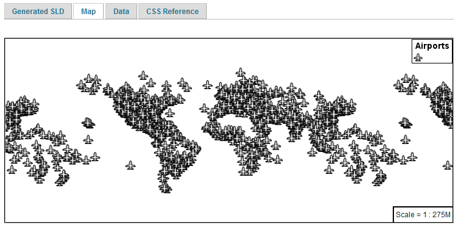

4.1. YSLD Quickstart¶
In the last section, we saw how the OGC defines style using XML documents (called SLD files).
We will now explore GeoServer styling in greater detail using a tool to generate our SLD files. The YSLD GeoServer extension is used to generate SLD files using a clearer, more consice language based on YAML. Unlike CSS, the YSLD styling language has a one-to-one correspondance to SLD, meaning that each line of YSLD translates directly to one or more lines of SLD. Aditionally, A YSLD style can be converted to SLD and back without loss of information.
Using the YSLD extension to define styles results in shorter examples that are easier to understand. At any point we will be able to review the generated SLD file.
Reference:
4.1.1. Syntax¶
This section provides a quick introduction to YSLD syntax for mapping professionals who may not be familiar with YAML.
4.1.1.1. Property Syntax¶
Individual statements (or directives) in a YSLD styling document are designed as key-value, or property-value pairs of the following form:
<property>: <value>
The <property> is a string denoting the property name, while the <value> can be one of a number of different types depending on context.
Integer |
Numerical value. May be surrounded by quotes. |
Float |
Numerical value. May be surrounded by quotes. |
Text |
Text value. If value is amiguous, use single quotes. |
Color |
Hexadecimal color of the form '#RRGGBB'. |
Tuple |
A list of values in brackets. e.g. [0, 1] |
Expression |
CQL expression surrounded by ${ } |
4.1.1.2. Mappings and lists¶
There are three types of objects in a YSLD document:
Scalar, a simple value
Mapping, a collection of key-value (property-value) pairs
List, any collection of objects. A list can contain mappings, scalars, and even other lists.
Lists require dashes for every entry, while mappings do not.
For example, a symbolizer block is a list, so every entry requires its own dash:
The polygon: and text: objects (the individual symbolizers themselves) are mappings, and as such, the contents do not require dashes, only indents:
- polygon: stroke-color: '#808080' fill-color: '#FF0000'
The dash next to polygon means that the item itself is contained in a list, not that it contains a list. And the placement of the dash is at the same level of indentation as the list title.
If you have a list that contains only one item, and there is no other content at higher levels of the list, you may omit the enclosing elements. For example, the following are equivalent:
feature-styles: - rules: - symbolizers: - point: symbols: - mark: shape: circle fill-color: 'gray'point: symbols: - mark: shape: circle fill-color: 'gray'
This is usefull for making your styles more concise.
4.1.1.3. Indentation¶
Indentation is very important in YSLD. All directives must be indented to its proper place to ensure proper hierarchy. Improper indentation will cause a style to be rendered incorrectly, or not at all.
For example, the polygon symbolizer, since it is a mapping, contains certain parameters inside it, such as the color of the fill and stroke. These must be indented such that they are “inside” the polygon block.
In this example, the following markup is correct:
- polygon: fill-color: '#808080' fill-opacity: 0.5 stroke-color: black stroke-opacity: 0.75
The parameters inside the polygon (symbolizer) are indented, meaning that they are referencing the symbolizer and are not “outside it.”
Compare to the following incorrect markup:
- polygon: fill-color: '#808080' fill-opacity: 0.5 stroke-color: black stroke-opacity: 0.75
4.1.1.4. Rules¶
We have already seen a CSS style composed of a single rule:
point: symbols: - mark: shape: circle fill-color: 'gray'
We can make a style consisting of more than one rule, carefully choosing the selector for each rule. In this case we are using a selector to style capital cities with a star, and non-capital with a circle:
rules: - filter: ${FEATURECLA = 'Admin-0 capital'} scale: [min, max] symbolizers: - point: size: 6 symbols: - mark: shape: star stroke-color: 'black' stroke-width: 1 fill-color: 'gray' - filter: ${FEATURECLA <> 'Admin-0 capital'} scale: [min, max] symbolizers: - point: size: 6 symbols: - mark: shape: circle stroke-color: 'black' stroke-width: 1 fill-color: 'gray'
The feature attribute test performed above uses Constraint Query Language (CQL). This syntax can be used to define filters to select content, similar to how the SQL WHERE statement is used. It can also be used to define expressions to access attribute values allowing their use when defining style properties.
Rule selectors can also be triggered based on the state of the rendering engine. In this example we are only applying labels when zoomed in:
rules: - scale: [min, '2.0E7'] symbolizers: - text: label: ${NAME} fill-color: 'gray'
In the above example the label is defined using the CQL Expression NAME. This results in a dynamic style that generates each label on a case-by-case basis, filling in the label with the feature attribute NAME.
Reference:
Filter Syntax (YSLD Reference)
ECQL Reference (User Guide)
4.1.1.5. Variables¶
Up to this point we have been styling individual features, documenting how each shape is represented.
When styling multiple feaures, or using filters to style individual features in different yars, you may need to repeat styling information.
Variables in YSLD allow for a certain directive or block of directives to be defined by name and later reused. This can greatly simplify the styling document.
The two most-common use cases for using variables are:
To create a more-friendly name for a value (such as using myorange instead of #EE8000)
To define a block of directives to remove redundant content and to decrease file length
It is customary, but not required, to place all definitions at the very top of the YSLD file.
The syntax for defining a variable as a single value is:
define: &variable <value>
The defined variable can then be used as a value by variable name with a *:
<directive>: *variable
The syntax for defining a variable as a content block is:
define: &varblock <directive>: <value> <directive>: <value> ... <block>: - <directive>: <value> <directive>: <value> ...
The syntax for using a variable block is to prepend the variable name with <<: *. For example:
<block>: - <directive>: <value> <<: *varblock
Variables (YSLD Reference)
4.1.2. Compare YSLD to SLD¶
As noted above, YSLD has a one-to-one correspondance with SLD, it merely uses a different markup language to diplay the same content. We can compare a SLD style with a YSLD style to see this correspondence:
4.1.2.1. SLD Style¶
Here is an example SLD file for reference:
1 2 3 4 5 6 7 8 9 10 11 12 13 14 15 16 17 18 19 20 21 22 23 24 25 26 27 28 29 30 | <?xml version="1.0" encoding="ISO-8859-1"?>
<StyledLayerDescriptor version="1.0.0"
xsi:schemaLocation="http://www.opengis.net/sld StyledLayerDescriptor.xsd"
xmlns="http://www.opengis.net/sld"
xmlns:ogc="http://www.opengis.net/ogc"
xmlns:xlink="http://www.w3.org/1999/xlink"
xmlns:xsi="http://www.w3.org/2001/XMLSchema-instance">
<NamedLayer>
<Name>airports</Name>
<UserStyle>
<Title>Airports</Title>
<FeatureTypeStyle>
<Rule>
<Name>airports</Name>
<Title>Airports</Title>
<PointSymbolizer>
<Graphic>
<ExternalGraphic>
<OnlineResource xlink:type="simple"
xlink:href="airport.svg" />
<Format>image/svg</Format>
</ExternalGraphic>
<Size>16</Size>
</Graphic>
</PointSymbolizer>
</Rule>
</FeatureTypeStyle>
</UserStyle>
</NamedLayer>
</StyledLayerDescriptor>
|
4.1.2.2. YSLD Style¶
Here is the same example as YSLD:
1 2 3 4 5 6 7 8 9 10 | name: airports
title: Airports
scale: [min, max]
symbolizers:
- point:
size: 16
symbols:
- external:
url: airport.svg
format: image/svg
|
We use a point symbolizer to indicate we want this content drawn as a Point (line 16 in the SLD, line 5 in the YSLD). The point symbolizer declares an external graphic, which contains the URL airports.svg indicating the image that should be drawn (line 20 in the SLD, line 9 in the YSLD).
4.1.3. Tour¶
To confirm everything works, let’s reproduce the airports style above.
Navigate to the Styles page.
Each time we edit a style, the contents of the associated SLD file are replaced. Rather then disrupt any of our existing styles we will create a new style. Click Add a new style and choose the following:
Name:
airports0
Workspace:
(leave empty)
Format:
YSLD
Replace the initial YSLD definition with with our airport YSLD example and click Apply:
name: airports title: Airports scale: [min, max] symbolizers: - point: size: 16 symbols: - external: url: airport.svg format: image/svg
Click the Layer Preview tab to preview the style. We want to preview on the aiports layer, so click the name of the current layer and select ne:airports from the list that appears. You can use the mouse buttons to pan and scroll wheel to change scale.

Choosing the airports layer¶
Layer preview¶
Click Layer Data for a summary of the selected data.

Layer attributes¶
4.1.4. Bonus¶
Finished early? For now please help your neighbour so we can proceed with the workshop.
If you are really stuck please consider the following challenge rather than skipping ahead.
4.1.4.1. Explore Data¶
Return to the Data tab and use the Compute link to determine the minimum and maximum for the scalerank attribute.
4.1.4.2. Challenge Compare SLD Generation¶
# The rest API can be used to review your YAML file directly.
Browser:
Command line:
curl -v -u admin:geoserver -XGET http://localhost:8080/geoserver/rest/styles/airports0.yaml
The REST API can also be used generate an SLD file:
Browser:
Command line:
curl -v -u admin:geoserver -XGET http://localhost:8080/geoserver/rest/styles/airports0.sld?pretty=true
Compare the generated SLD differ above with the hand written
SLD fileused as an example?Challenge: What differences can you spot?